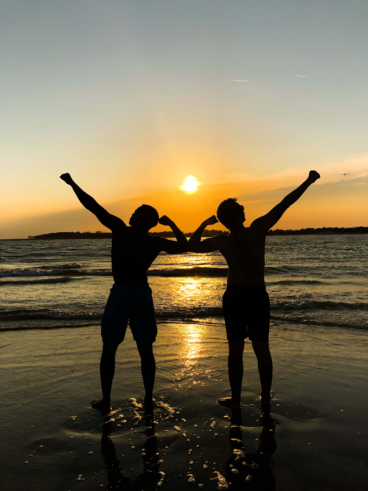
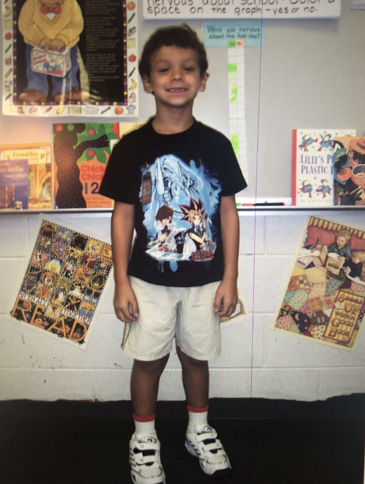

I am from Savannah, GA, which helped shape some of my passions. I have always had a love for the ocean and the beach, as I lived very close to them growing up. I love anything from sunset yoga on the beach to tubing in the ocean. Beyond that, some of my hobbies include calisthenics training, video games, music (both listening and playing), shuffle dancing, and sharing a drink with friends.
In the summer of 2019 I interned at geothinQ as a GIS intern. This experience was fantastic for me because it allowed me to learn a lot about maps and data. I developed a passion for data after creating a makeshift classifier for zoning data we received. I also learned the python-based web framework Django, which helped me understand modern web programming in a professional setting better.
In the summer of 2020 I interned at NCR Corporation as a Software Engineer intern. I honed in on my full stack web programming skills here as well, learning and working with Angular, Hibernate, and PostgreSQL to implement a digital dining experience for websites owned by small businesses. This experience was particularly rewarding because I felt like the work I was doing truly helped these businesses safely continue to stay open amid the COVID-19 pandemic.
I recently accepted a full time position as a Software Engineer at NCR Corporation following my graduation in May of 2021. I am incredibly excited for the opportunity to continue growing my skills and work with such amazing people.